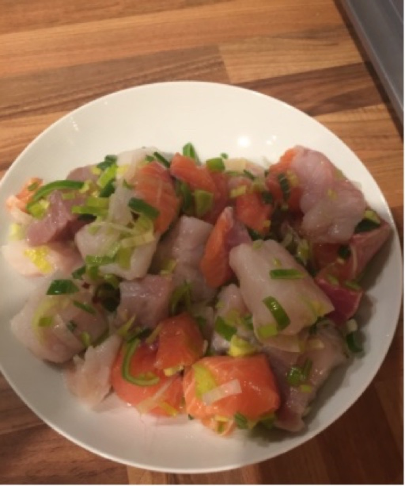
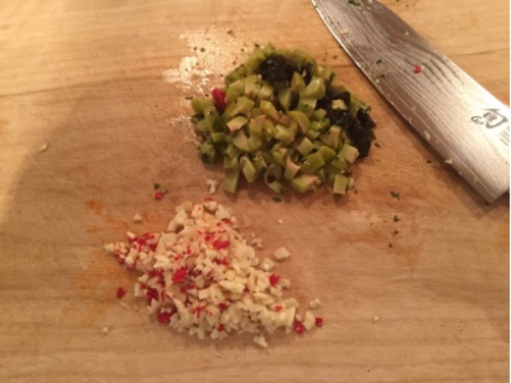
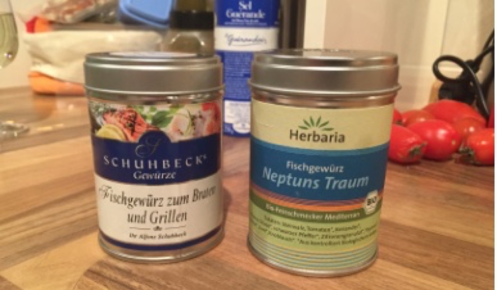
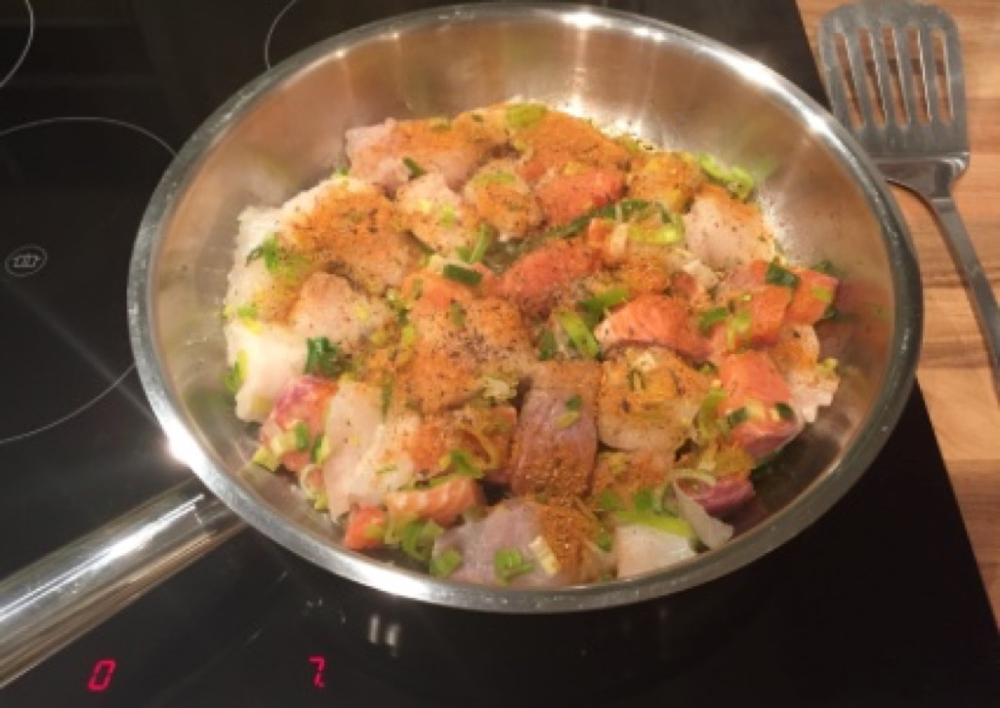
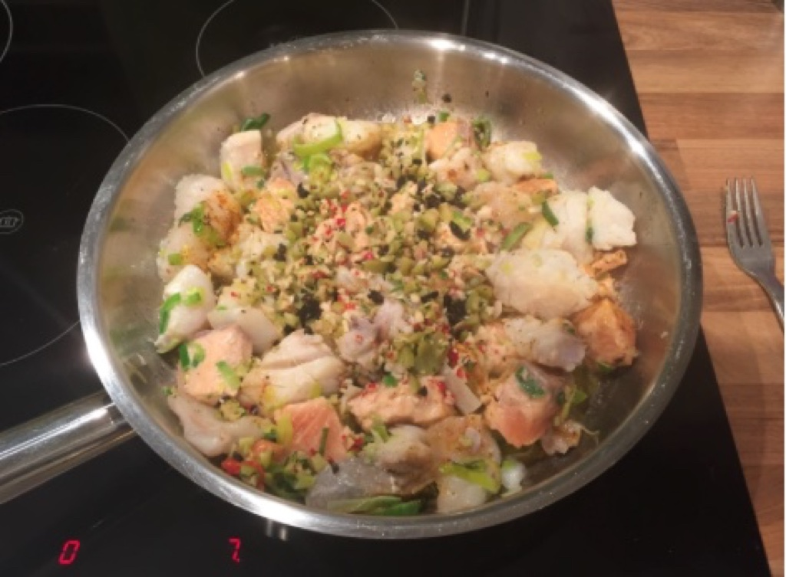
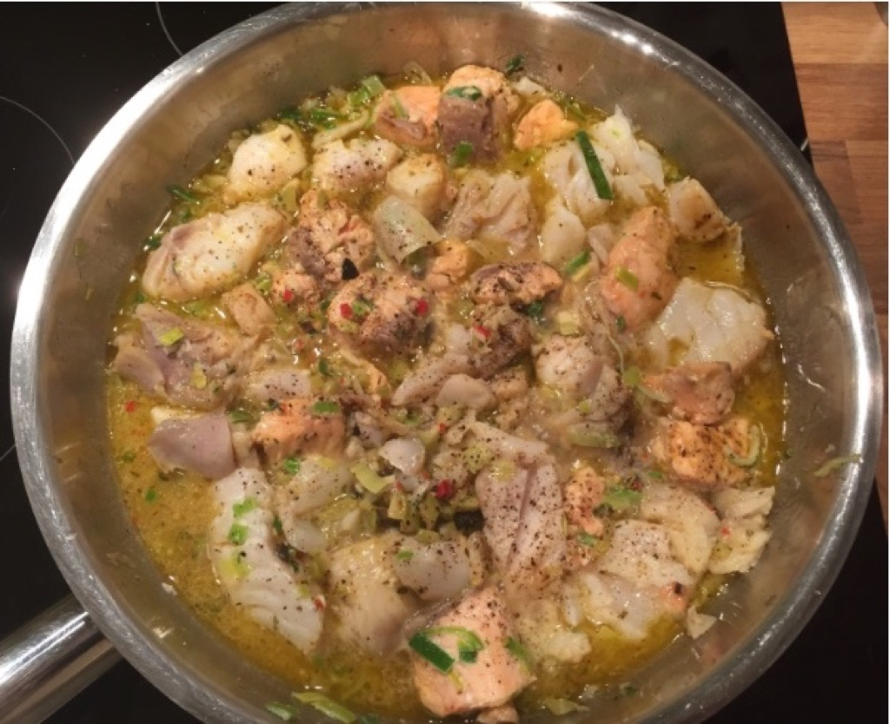
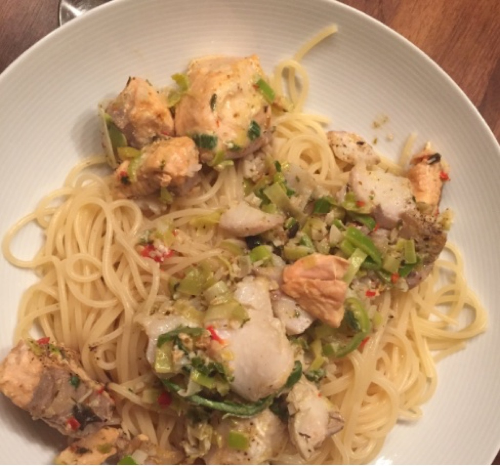
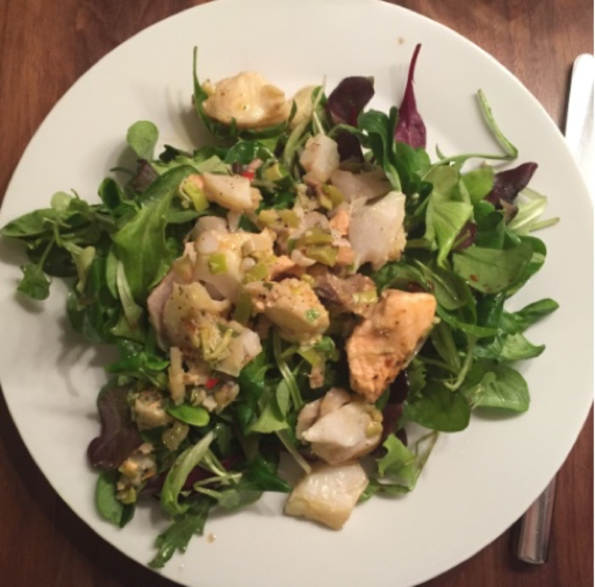

Fischpfanne mit Salat bzw. Spaghetti
Steckbrief#
Dieses leckere Essen ist in kurzer Zeit zubereitet und lässt sich mit Spagetti oder zum Salat genießen.
Zutaten#
- Ca. 1Kg Fischfilet klein geschnitten (was gerade im Angebot ist)
- Oliven
- Knoblauch
- 2 Chili
- 1 Glas Wein (Rezept für je 2x Spagetti/ Salat)
- 1/2 Zitrone
- Salz, Pfeffer
- Gewürze (siehe Text)
- Salat mit Lieblingsdressing
Los geht’s#
Fisch mit Lauch (in feinen Streifen) in Olivenöl marinieren

Knoblauch und Chili fein hacken. Oliven in Ringe schneiden oder hacken

Halbe Zitrone und Weißwein bereitstellen
Gewürze sind Fischgewürz zum braten (1TL) und/oder Neptuns Traum (1/2TL nicht zuviel). Ein Grillgewürz tut es auch. Statt Neptunes Traum kann man auch ein Pinnchen Ouzo oder Pastis nehmen. Dies dann vor dem Wein bei hoher Hitze dazu geben und reduzieren lassen bevor Wein dazu kommt.

Jetzt ist das Timing entscheidend. Der Fisch braucht ca. 12-14 Minuten. Also typischerweise erst das Wasser für die Spaghetti zum kochen bringen, dann Fisch 2-3 Minuten VOR den Nudeln in der Pfanne in etwas Olivenöl anbraten. Nicht zu heiß machen. Direkt nachdem der Fisch in der Pfanne ist, die Gewürze drüber tun.

Nach 4 Minuten Fisch vorsichtig wenden und Oliven, Knoblauch und Chili drüber geben. Eine Prise Salz und Pfeffer dazu. Nudeln nicht vergessen.

3-4 Minuten braten (eher 3 als 4), dann Wein und Zitronensaft dazu geben. Ein bisschen auflockern damit Oliven & Co in den Sud fallen.

Temperatur reduzieren. Nicht zu lange kochen lassen. Falls die Nudeln zu früh fertig werden, Deckel auf den Fisch geben.
Über die Spaghetti bzw. über den Salat geben.

